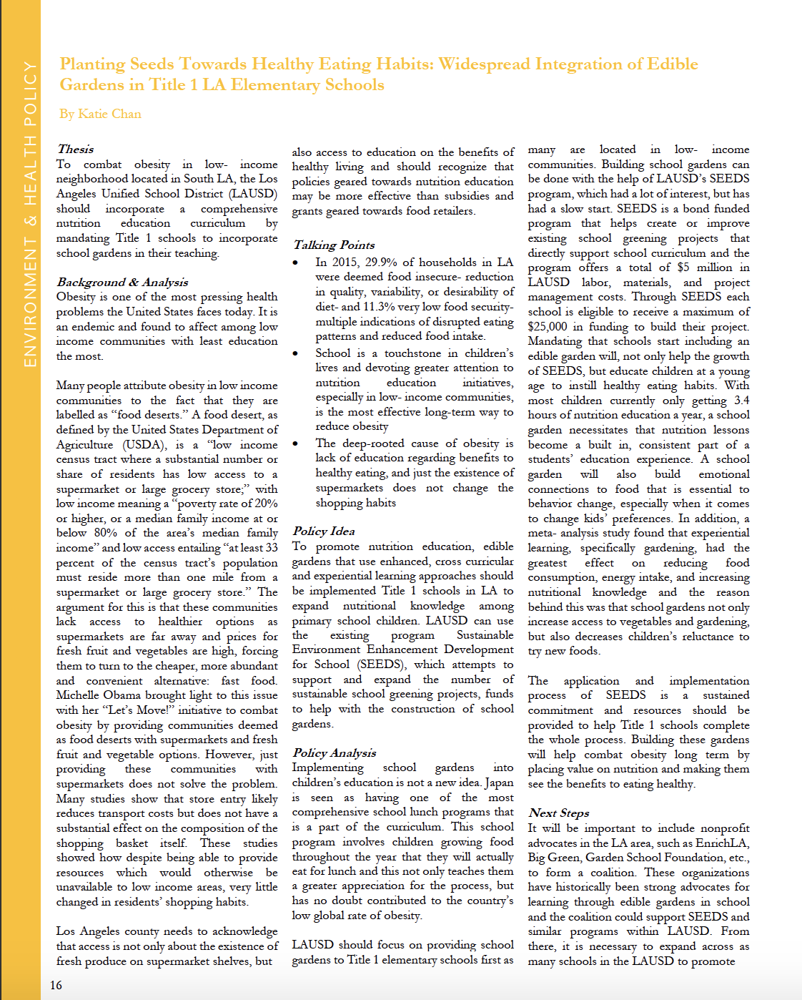
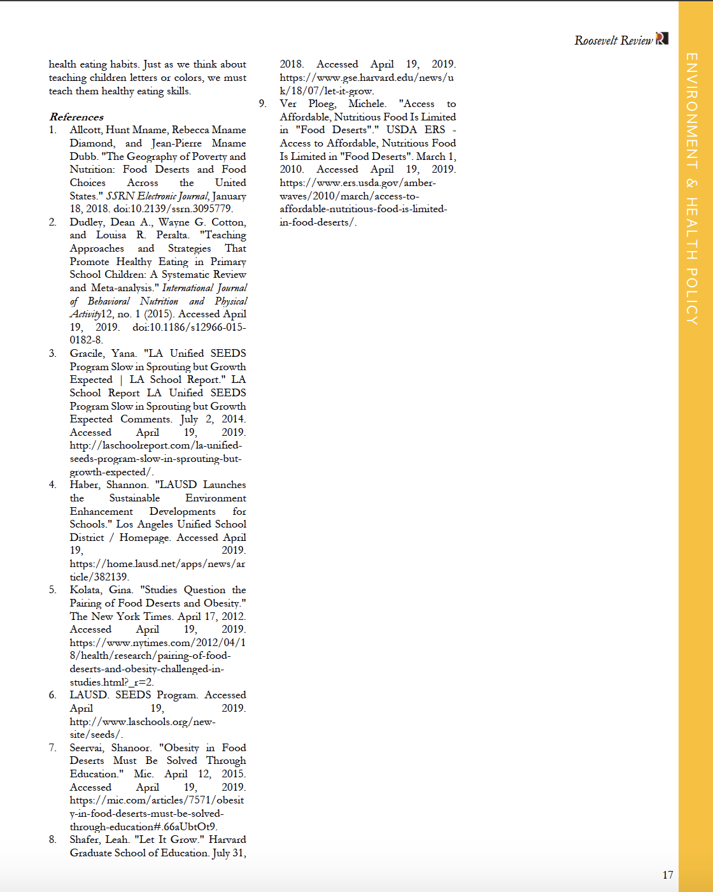

PLANTING SEEDS TOWARDS HEALTHY EATING HABITS
For the Roosevelt Network @ USC

<
The Roosevelt Network at USC is a student-run, progressive policy think tank. We focus on research, policy, and
advocacy
The Roosevelt Network at USC was recently reactivated last year, under the direction of Tingyee Chang'19. Under Tingyee, the club sustained its first year back and I was part of that original cohort of policy analysts. That year, I wrote policy
on combatting obesity in low-income neighborhoods by mandating Title 1 elementary schools in LAUSD to implement edible gardens into
the curriculum.
I entitled the piece Planting Seeds Towards Healthy Eating Habits: Widespread Integration of Edible Gardens
in Title 1 LA Elementary Schools. It proposed the use of LAUSD's bond-funded program SEEDS to help with the
implementation of food gardens in elementary school. This policy memo was published in USC's first and only
undergraduate policy journal, The Roosevelt Review.